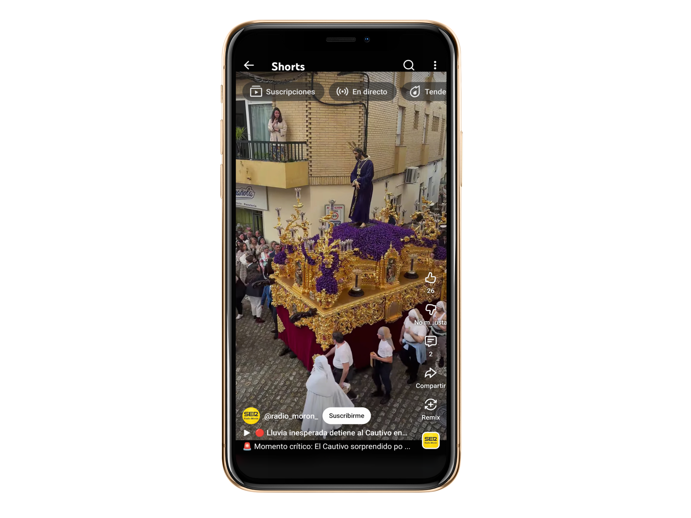
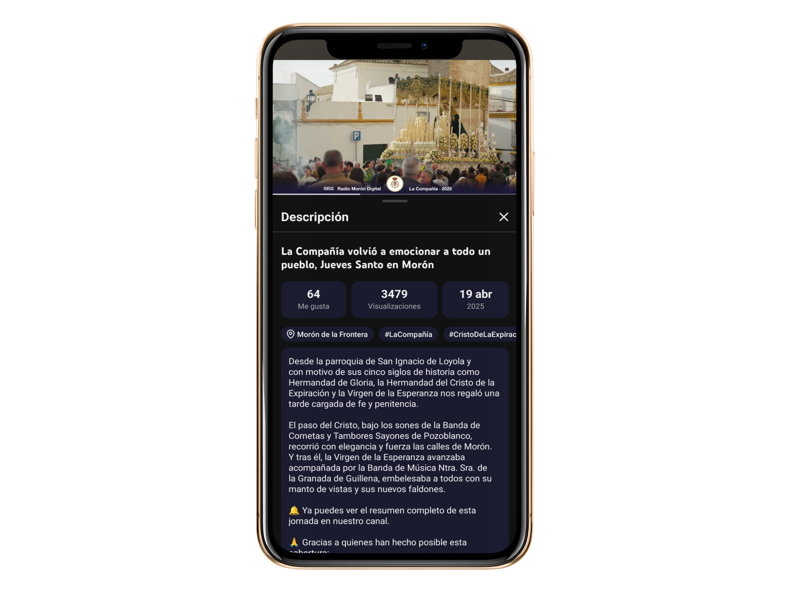

Marzo
Viernes
Marzo
Domingo
Mañana
Marzo
Domingo
Noche
Marzo
Lunes
Marzo
Martes
Abril
Miércoles
Abril
Jueves
Abril
Viernes
Madrugada
Abril
Viernes
Noche
Abril
Sabado
Semana Santa de Morón 2026
Viernes de Dolores
El Pantano, Parroquia de San José
La Borriquita
Los Salesianos,Iglesia María Auxiliadora
El Cautivo
San Miguel, Plaza Mº Stma. de la Paz
La Merced
Calle Marchena, Parroquia de la Merced
Los Salesianos
Los Salesianos, Iglesia María Auxiliadora
San Francisco
Hospital, Parroquia de San Francisco
La Compañía
La Compañía, San Ignacio de Loyola
La Madrugá
Cuesta de Jesús, Ermita de la Fuensanta
El Santo Entierro
La Victoria, Parroquia Ntra. Sra. de la Victoria
La Soledad
San Miguel, Plaza Mº Stma. de la Paz

Viernes de Dolores
Salida: 18:30 h. desde la parroquia de San José, recorriendo hasta la 01:00 h. las calles más emblemáticas de Morón de la Frontera.
Música: Banda de Cornetas y Tambores Ntro. Padre Jesús Nazareno de
Arahal en el Cristo y Banda Municipal de Música de Morón en la Virgen.
Novedades 2025: La Hermandad del Soberano continúa enriqueciendo su patrimonio en este 2025 con importantes incorporaciones y mejoras que consolidan su identidad.
Entre los estrenos más destacados se encuentra un nuevo manto bordado para la Virgen, fruto de la aportación de un grupo de hermanos, así como una elegante saya confeccionada en tisú de plata, también donada.
El Señor estrenará una túnica de terciopelo azul añil, que aportará mayor sobriedad a la escena del misterio. Además, se ha llevado a cabo la restauración completa del dorado de los candelabros del paso, a cargo del artesano Pablo de Haro Hermosín.
Completan las novedades de este año un conjunto de ocho ciriales y dos pértigas realizados por Orfebrería del Sur, con sede en Lucena, así como un nuevo juego de plumas para la figura del romano que acompaña el misterio.
Estos estrenos refuerzan el crecimiento artístico de una hermandad que, pese a su juventud, cuida cada detalle con mimo y devoción.

Domingo de Ramos: La Borriquita
Salida: 10:20 h. desde la iglesia de María Auxiliadora.
Música: Banda de Cornetas y Tambores Ntro. Padre Jesús Nazareno de Arahal.
Novedad 2025: Mencía Serrano García será la nazarena que pida
la primera venia de la Semana Santa 2025.
Disfruta de la solemnidad y la devoción de esta hermandad histórica que recorre las calles en un acto de fe y tradición. ¡No te lo pierdas!

Domingo de Ramos (Tarde): El Cautivo
Salida: 18:00 h. desde la parroquia de San Miguel Arcángel, finalizando a las 22:00 h. tras un recorrido que abraza el corazón de la ciudad.
Música: La solemnidad de Ntro. Padre Jesús Cautivo viene acompañada por la Banda de Cornetas y Tambores Ntro. Padre Jesús Nazareno de Arahal, mientras que María Stma. de la Paz sigue al son de la Banda Municipal de Música de Morón.
Novedades 2025: La Hermandad de Nuestro Padre Jesús Nazareno presenta para esta Semana Santa 2025 una serie de novedades que consolidan su valioso patrimonio y refuerzan su vínculo con la historia y la tradición local.
Recuperación histórica
Uno de los elementos más destacados de este año es la recuperación de un antiguo cuadro devocional que se veneraba en la Parroquia de San Miguel antes de la fundación oficial de la hermandad, en 1944. Esta pieza será restaurada y expuesta junto a las imágenes titulares, devolviendo así al culto una obra que forma parte de la memoria colectiva de Morón.
Estrenos y restauraciones
En lo que respecta al paso de Cristo, se ha concluido el dorado de los respiraderos laterales y traseros, obra del artesano Francisco Pardo, completando así la totalidad del conjunto. Además, se ha llevado a cabo la restauración interna de los varales del paso de palio.
Estas actuaciones se suman a las mejoras ya realizadas en el año anterior, entre ellas la finalización del dorado de los candelabros del paso del Señor, también a cargo de Francisco Pardo, y la preparación del respiradero para su dorado actual.
Por su parte, el escultor Manuel Martín Nieto culminó las cartelas del canasto del paso de Cristo, con dos escenas de gran significado teológico: el Bautismo de Jesús y la Transfiguración en el Monte Tabor.

Lunes Santo (Tarde): La Merced
Salida: 18:00 h. desde la parroquia de la Merced, culminando su recorrido a las 00:15 h. Prepárate para vivir un recorrido lleno de devoción por las calles más significativas.
Música: La Agrupación Musical La Vera Cruz de Campillos acompaña al Cristo, mientras que la Virgen es seguida por la Asociación Musical de La Algaba.
Novedad: Este año, Manuel Martín Nieto, vuelve a coger el martillo del
paso de palio.

Martes Santo (Tarde): Los Salesianos
Salida: 19:00 h. desde la iglesia de María Auxiliadora, retornando a las 23:45 h. tras un emocionante recorrido por las calles más representativas.
Música: El Cristo es acompañado por una capilla musical de la Banda Municipal de Sevilla y el Grupo Vocal de Cámara "Redentoris Mundi" de Coria del Río, mientras que la Virgen se engalana con los sones de la Banda Municipal de Morón.
Novedades: La Hermandad de la Buena Muerte presenta este año varias novedades que refuerzan su arraigo en la ciudad y el cuidado constante de su patrimonio.
Un homenaje que se convierte en calle
Uno de los detalles más significativos de esta Semana Santa 2025 es el cambio de nombre de la calle que discurre desde la esquina de la Capilla de María Auxiliadora hasta la confluencia con la calle Soria. Conocida hasta ahora como “ampliación de María Auxiliadora”, esta vía pasa a denominarse oficialmente Calle Cristo de la Buena Muerte, en honor a la imagen titular de la hermandad.
Un reconocimiento que nace desde el cariño del barrio y de los cofrades, como también lo es el gesto que, cada año, repite un hermano costalero: colocar una cala blanca a los pies del Cristo, como ofrenda silenciosa y personal de devoción.
Estrenos y restauraciones
Entre los trabajos realizados para este año, destaca la restauración de los hachones del paso, la incorporación de dos varas nuevas, así como la puesta a punto de otras varias varas del cortejo. Intervenciones discretas pero esenciales para mantener el buen estado y la dignidad del conjunto procesional.

Miércoles Santo (Tarde): San Francisco
Salida: 18:30 h. desde la parroquia de San Francisco, concluyendo a la 01:00 h. tras un recorrido que envuelve el alma de la ciudad con su fe y tradición.
Música: La Agrupación Musical María Stma. De Los Dolores "El Rescate de Linares" acompaña al Cristo, mientras que la Banda Municipal de El Saucejo (Sevilla) sigue a la Virgen.
Novedades: La Hermandad del Cristo de la Agonía y Nuestra Señora de Loreto llega a esta Semana Santa 2025 con importantes avances patrimoniales y simbólicos que reflejan su crecimiento y consolidación dentro del panorama cofrade de Morón.
Reconocimiento en el callejero y ampliación de la Casa Hermandad
Uno de los gestos más significativos de este año es el cambio de nombre de la Huerta del Hospital, que pasa a llamarse Calzada del Cristo de la Agonía, un reconocimiento público a la devoción que esta imagen despierta entre sus fieles.
Además, la hermandad ha adquirido la vivienda contigua a su Casa Hermandad, con el objetivo de ampliar sus instalaciones y mejorar así la organización y desarrollo de su actividad interna.
Estrenos de 2025
Entre las principales novedades para este año, destaca la incorporación de una nueva mesa para el paso del Cristo, así como la primera tanda de candelabros que han sido ejecutados por el taller de Hermanos Fernández. Se estrenan también la Cruz Parroquial y los ciriales que la acompañan.
Patrimonio incorporado en 2024
El pasado año se sumaron al cortejo los nuevos respiraderos para el paso de la Virgen de Loreto, también obra de Hermanos Fernández. Su diseño apuesta por una línea sobria, con estructura rectangular, molduras rectas y una crestería inferior de piezas torneadas.
La cartela central representa el origen de la advocación de la Virgen de Loreto, mientras que las cartelas laterales recogen iconográficamente otras devociones vinculadas a la base aérea de Morón: Nuestra Señora de las Aguas, Nuestra Señora de los Remedios y Santa Clara.

Jueves Santo (Tarde): La Compañía
Salida: 18:30 h. desde San Ignacio de Loyola, concluyendo a las 23:45 h. El recorrido es un viaje por el corazón de la tradición, pasando por las plazas y calles más emblemáticas.
Música: La Banda de Cornetas y Tambores Sayones de Pozo Blanco (Córdoba), acompaña al Cristo, mientras la Virgen desfila al son de la Banda Ntra. Sra. de la Granada de Guillena (Sevilla).
Novedades: La Hermandad de la Esperanza continúa enriqueciendo su patrimonio con nuevas incorporaciones y la recuperación de piezas de gran valor histórico, tanto en el paso de Cristo como en el palio de la Virgen.
El legado del antiguo paso
Del anterior paso de Cristo se conservan elementos de gran valor artesanal, como los candelabros tallados por Guzmán Bejarano y los faldones bordados por Manuel Solano. El paso completo fue trasladado en su día a la localidad de Bornos (Cádiz), donde actualmente lo utiliza la Hermandad del Nazareno.
Estrenos para 2025
Este año se incorpora al nuevo paso del Señor una serie de tallas realizadas por Francisco Rodrigo Verdugo, dentro del proceso progresivo de finalización del conjunto. También se han restaurado las potencias del Señor, trabajo llevado a cabo por Manuel Casiano.
En el paso de palio, la Hermandad estrenará nuevos faldones, confeccionados de forma artesanal por miembros de la Junta de Gobierno.
Joyas textiles de distintas épocas
La Virgen de la Esperanza lucirá este año un valioso tocado de encaje de aplicación de Bruselas, datado a mediados del siglo XIX y adquirido a través de “Encajes de Época”.
A ello se suma un nuevo manto de vistas, confeccionado por Manuel Solano a partir de bordados antiguos, y un par de puños de encaje de aplicación inglesa de finales del siglo XVIII, pertenecientes a la época Luis XV, donados por Manuel Clavijo Andújar y Francisco Ruiz Muñoz.
Estas piezas textiles, de gran valor histórico y simbólico, contribuyen a enriquecer la estética y solemnidad del paso de la Virgen, manteniendo vivo el compromiso de la Hermandad con el cuidado y la dignidad de su patrimonio.

Viernes Santo (Madrugada): Jesús Nazareno
Salida: 5:30 h. desde la ermita de la Fuensanta, finalizando a las 12:45 h. Un recorrido que transita por las calles más simbólicas, marcando un acto de fe profundo y tradicional.
Música: La Agrupación Musical de Ntro. Padre Jesús de Morón guía al Cristo, mientras que la Banda Municipal de Música de Morón acompaña a la Virgen, en una armonía que toca el alma.
Aniversario: La Hermandad presenta este año una serie de actuaciones significativas centradas en la conservación de su patrimonio más valioso: sus imágenes titulares.
Restauración de las imágenes
El reconocido imaginero Juan Manuel Miñarro ha llevado a cabo en 2025 una nueva intervención sobre las imágenes de Jesús, la Virgen de los Dolores y San Juan, devolviéndoles frescura y respetando su identidad original.
Se trata de una restauración especialmente simbólica, ya que el propio Miñarro fue también el encargado de las anteriores intervenciones: en 1996 sobre Jesús y Dolores, y en 1998 sobre la imagen de San Juan.
Estrenos para el paso de palio
Además, la Virgen de los Dolores incorporará este año nuevos elementos de ajuar: un par de puños de encaje, un pañuelo y un tocado, que vienen a enriquecer la estética del paso con detalles de delicadeza y sobriedad, en consonancia con el estilo propio de esta hermandad.

Viernes Santo (Tarde): Santo Entierro
Salida: 19:00 h. desde la parroquia de Ntra. Sra. de la Victoria, finalizando a las 23:15 h. Un recorrido profundamente solemne por las calles que resuenan con la historia y la devoción de la comunidad.
Música: La Asociación Musical Ntra. Sra. de la Oliva de Arahal acompaña la Piedad, elevando el acto con sus melodías.
Aniversario: La Hermandad del Santo Entierro afronta la Semana Santa de 2025 con importantes estrenos y una decisión que marca un regreso esperado en su acompañamiento musical.
El regreso de las marchas fúnebres
Después de varios años en los que el paso de la Piedad ha estado acompañado por agrupación musical, en este 2025 la Hermandad recupera la sonoridad clásica de las marchas fúnebres interpretadas por banda de música. Un cambio que evoca momentos especiales vividos en el Santo Entierro Magno del año 2000 y en la salida extraordinaria de 2017, donde esta fórmula se convirtió en una imagen inolvidable para los cofrades de Morón.
Estrenos para la Virgen de las Antiguas
La Virgen de las Antiguas lucirá esta Semana Santa un nuevo encaje para la vista frontal del manto de salida, confeccionado de manera artesanal en Punto de España con cuatro tipos de hilo de oro. Completan las novedades textiles una pieza de tisú otomán blanco y dorado para el pecherín, y la saya de terciopelo morado con bordados en oro, ya estrenada en los cultos extraordinarios del pasado mes de noviembre.
Mejoras técnicas y nuevas incorporaciones
El paso del Señor Yacente ha sido actualizado con una nueva instalación eléctrica en la urna, que ahora incorpora iluminación LED, aportando una luz más cálida y respetuosa con la imagen, y garantizando su mejor conservación.
Los acólitos de ambos pasos estrenarán albas blancas, aportando uniformidad y renovación al cortejo.
Patrimonio incorporado en 2024
Entre las piezas que se sumaron el pasado año destacan:
– Dos rosarios,
– Un fajín de terciopelo con galones, encajes y flecos de hilo metálico sobredorado,
– Un pañuelo de bolillos hecho a mano,
– Y un encaje de Milán del siglo XIX destinado al tocado de la Virgen.
Además, el Cristo de la Victoria estrenó el cordón que sujeta su paño de pureza, y el Señor Yacente renovó por completo su conjunto textil: sudario y los tres cojines, elaborados en brocado blanco con detalles dorados.

Sábado Santo (Tarde): La Soledad
Salida: 19:00 h. desde la parroquia de San Miguel, regresando a las 22:35 h. después de recorrer las calles más emblemáticas, envueltas en la solemnidad y el recogimiento.
Música: La Capilla "Arc Sacra" lidera la procesión en la Cruz de Guía, mientras que la Banda Municipal de Música de Morón acompaña a Ntra. Sra. de los Dolores en su Soledad, en un ambiente de profunda devoción.
Estrenos: La Hermandad de la Virgen del Rosario continúa desarrollando su patrimonio paso a paso, con nuevas incorporaciones en el ajuar y elementos del paso de palio que consolidan su estética y funcionalidad.
Estrenos previstos para 2025
Entre las incorporaciones previstas para esta Semana Santa destacan dos servidores de librea, que se integrarán en el cortejo procesional. Se suman también dos nuevos incensarios, las maniguetas del paso, así como la restauración interna de los varales del palio, labores que contribuyen al buen estado y conservación del conjunto. Asimismo, se ha acometido la restauración de la vara de la hermana mayor, una pieza simbólica dentro del cortejo de la cofradía.
Incorporaciones de 2024
Durante el pasado año se completaron otros elementos fundamentales del paso. Se estrenó la parihuela del paso y se incorporaron las bambalinas, confeccionadas por Dolores Fernández.
El techo de palio se cubre con una tela impermeabilizadora, una solución funcional que protege el conjunto y que, además, incorpora un dibujo central con el escudo de la hermandad, obra de Jesús Manuel Jurado Pinto. Sobre él se colocó también una tiara o diadema, aportando un toque de solemnidad y dignidad a la estructura del paso.